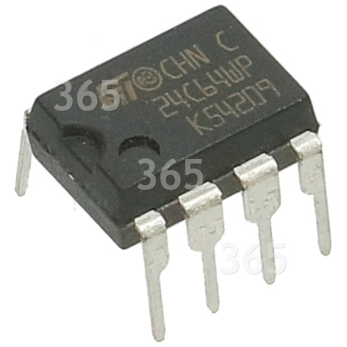

Glossario - E
EEPROM
Electrically Erasable Programmable Read Only Memory
Memoria a
sola lettura cancellabile
e programmabile solo elettricamente. In essa sono contenuti i dati e i programmi del
BIOS
.
